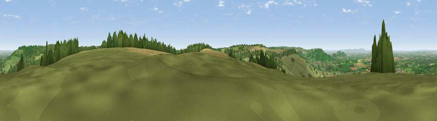

Viewpoint near Hailes
#5674 in England · top 11% of its area beats it · near HailesThe view, rendered

A 360° render of this exact spot computed from the terrain model, tree cover and land cover — summer colours, afternoon light, calibrated against photographs of famous viewpoints. Real trees, hedges and buildings will differ in detail.
The panorama
Grey silhouette: terrain skyline in each direction (720 bearings, Earth curvature and refraction included). Dashed green: skyline with trees (+15 m) and buildings (+8 m) as obstacles. Blue strip: how far the ground is visible on each bearing.
Where the view opens
Wedge length = distance to the farthest visible ground on that bearing (vegetation-aware). Rings at 10, 25 and 50 km.
What fills the view
62% grassland · 21% woodland · 17% cropland ·
Angular shares of the visible panorama (visual magnitude), not map area. Landscape diversity 0.42 (0–1 Shannon).
Key numbers
More beautiful places nearby
The staircase of upgrades: each row has a higher view potential than everything closer. Driving times are estimates from straight-line distance, calibrated against real road routing — check an actual route before setting out.
| Place | Direction | Drive | Score |
|---|---|---|---|
| Salter's Hill | WSW · 2 km | ~6 min | 72.3 |
| Viewpoint near Stanton | NNE · 3 km | ~8 min | 75.8 |
| Viewpoint near Alderton | NW · 7 km | ~15 min | 76.5 |
| Broadway Hill | NE · 8 km | ~16 min | 77.7 |
| Nottingham Hill | W · 8 km | ~17 min | 80.9 |
| Bredon Hill | NW · 15 km | ~27 min | 83.0 |
| Black Hill | WNW · 32 km | ~49 min | 83.1 |
| Millennium Hill | WNW · 32 km | ~49 min | 86.9 |
51.96765, -1.90862 · source: screening · position refined by local search. Computed location — check access rights before visiting.